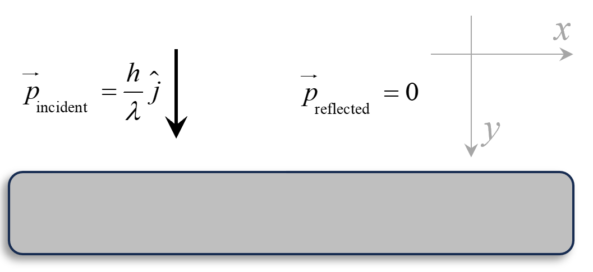
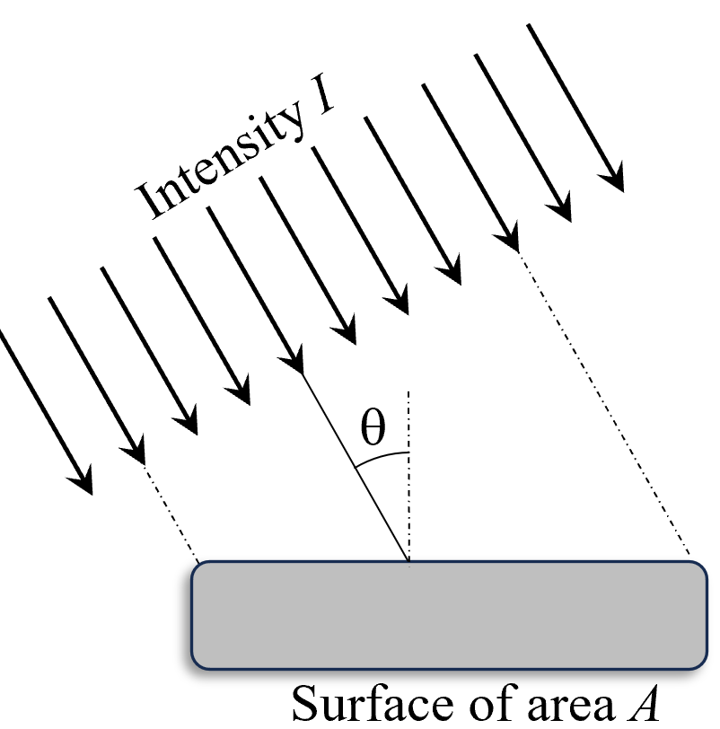
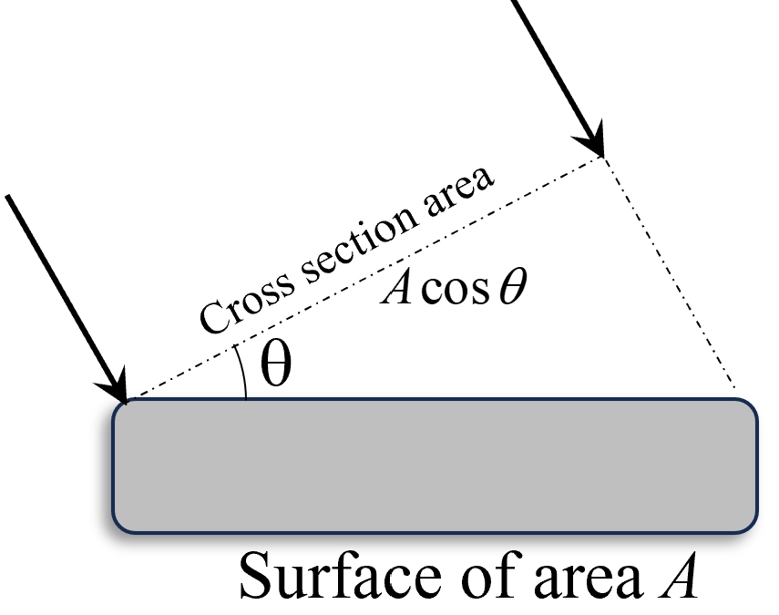
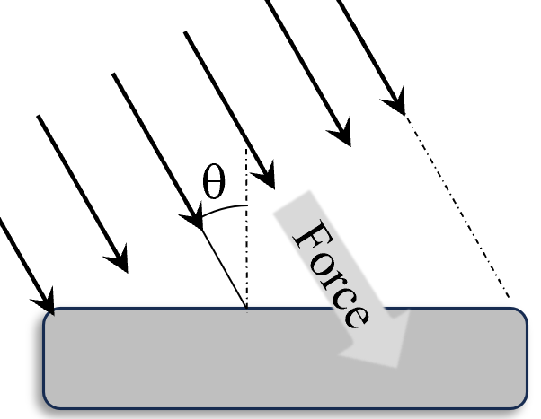

When radiation interacts with matter, the exchange of energy occurs in discrete
packets, one at a time. So, it behaves as if it consists of discrete packets of
energy called photons. This concept emerges from
observations like the photoelectric effect, where light transfers energy to
electrons in quantized amounts. In every event of energy exchange between light and
matter, exactly one photon is involved, transferring its entire energy to a system.
According to the photon concept, how does light transfer energy to matter?
By transferring energy in discrete packets called photons
By transferring energy continuously as a wave
The notion of photons revolutionized our understanding of light, bridging the gap
between wave and particle theories. The following diagram illustrates how photons
interact with electrons on a metallic surface, causing phenomena such as the
photoelectric effect.
Figure 1: Photon interacting with an electron
on a metal surface.
Mass of Photon
Photons always travel at the speed of light in a vacuum, denoted as \(c\), and this
speed remains constant in a given medium. Hence, the conventional concept of mass
cannot be used to fully understand the mass of a photon. In physics, mass manifests
in several forms, each playing a distinct role in our understanding of matter and
energy. The primary types of mass include rest mass,
inertial mass, gravitational mass, and
relativistic mass. Below, we explore how each type of mass applies
to photons.
Rest Mass
Rest mass refers to the intrinsic mass of an object when it is at rest
relative to the observer. For photons, the rest mass (\(m_0\)) is zero.
This means photons are massless particles that cannot be brought to
rest; they always travel at the speed of light. Mathematically, this is
expressed as:
\(\qquad m_0 = 0\)
The equation \(E = m_0 c^2\) implies that since \(m_0 = 0\), photons
have zero rest energy. However, photons do possess energy through their
frequency, as described by Einstein's equation \(E = h\nu\).
What is the rest mass of a photon?
Zero
Equal to \(h\nu\)
Equal to \(m_0 c^2\)
Inertial Mass
Inertial mass measures an object's resistance to acceleration when a
force is applied. The photons always move at speed \(c\). Therefore,
photons do not have inertial mass in the conventional sense used for
massive particles. So, we can not define inertial mass for photons.
Can photons travel at speeds less than the speed of light in a
vacuum?
Yes, if they have lower energy
No, they always travel at the speed of light in a vacuum
Gravitational Mass
Gravitational mass determines how an object interacts with gravitational
fields. While photons have zero rest mass, they carry energy and
momentum, which allows them to be influenced by gravity. According to
Einstein's general relativity, energy and momentum can curve spacetime,
enabling photons to experience gravitational effects such as
gravitational lensing. This phenomenon occurs when light bends around
massive objects like galaxies, illustrating that photons do interact
gravitationally despite having no rest mass. Hence, the photons have
non-zero gravitational mass.
Why are photons able to bend around massive objects like stars if
they have zero rest mass?
Because their energy and momentum allow them to interact with
gravitational fields
Because they gain mass when moving at high speeds
Relativistic Mass
Relativistic mass is the mass of an object as it increases with its
velocity relative to an observer. However, since photons always travel
at \(c\), the concept of relativistic mass does not apply to them in the
traditional sense used for massive particles. Therefore, the
relativistic mass of a photon is not defined. Instead, photons are
described by their energy and momentum without attributing a
velocity-dependent mass. This perspective aligns with modern physics,
which prefers discussing energy and momentum directly rather than using
relativistic mass.
Does the concept of relativistic mass apply to photons in the
traditional sense used for massive particles?
Yes
No
Photons, the fundamental particles of light, exhibit unique characteristics in
relation to these mass types. However, photons have capabilities to carry energy and
momentum with them which is described in following sections.
Experimentally, it's observed that light originates from moving charges, and as
light is formed, the energy of the charged particles decreases. For example,
electrons oscillating in an antenna emit light and continue to propagate through
space until they interact with other charged particles, whose energy increases as
light vanishes. This clearly indicates that light carries both energy and momentum
as it travels.
What does the observation of light emission from moving charges indicate about
light?
That light carries both energy and momentum
That light has no energy and momentum
Energy of Photon
The energy of a photon is directly proportional to its frequency, as
established by the photoelectric effect and expressed by the equation:
\(\qquad E = h f\)
Additionally, the energy of a photon can also be expressed in terms of
its wavelength (\(\lambda\)) as:
\(c\): Speed of light in
vacuum (\(3 \times 10^8 \, \text{m/s}\))
\(\lambda\): Wavelength of
the photon
If the wavelength of a photon increases, does its energy increase as
well?
Yes, energy increases with wavelength
No, energy decreases as wavelength increases
This equation beautifully combines the particle nature (energy \(E\))
and the wave
nature (frequency \(f\)) of light, embodying the dual nature of
radiation. The
following diagram illustrates how photons of different frequencies carry
different
amounts of energy.
Figure 2: Photons with varying
frequencies
and energies.
What is the relationship between a photon's energy and its
wavelength according to \(E = \frac{h c}{\lambda}\)?
Energy is inversely proportional to wavelength
Energy is directly proportional to wavelength
There is no relationship
Counting the Photons
To estimate the number of photons emitted by a source (also known as
photon flux), we can use the
source's power
and the wavelength of the emitted light. The energy of each photon is
given by:
\(\qquad E = \frac{h c}{\lambda}\)
Where \(\lambda\) is the wavelength of the photon. The number of photons
emitted per
second (\(n\)) can be calculated using the source's power (\(P\)) as
follows:
\(\qquad n = \frac{P}{E} = \frac{P \lambda}{h c}\)
Where:
\(n\): Number of photons
emitted per second
\(P\): Power of the source
(in watts)
\(\lambda\): Wavelength of
the emitted light (in meters)
\(h\): Planck's constant
\(c\): Speed of light in
vacuum
This calculation allows us to understand the quantized nature of light
emission from sources like lasers or LEDs, where discrete photons are
emitted rather than a continuous wave of energy.
If a light source maintains constant power but increases the
frequency of the emitted photons, what happens to the number of
photons emitted per second?
The number of photons emitted per second decreases
The number of photons emitted per second increases
Momentum of Photon
The momentum of a photon is another crucial aspect. According to de
Broglie's
hypothesis, particles like photons have an associated wavelength, given
by:
\(\qquad \lambda = \frac{h}{p}\)
\(\Rightarrow\quad p = \frac{h}{\lambda}\)
Where:
\(\lambda\): Wavelength of
the photon
\(h\): Planck's constant
\(p\): Momentum of the
photon
This equation shows that photons carry momentum inversely proportional
to their
wavelength. High-momentum photons have shorter wavelengths and higher
frequencies,
such as gamma rays, while low-momentum photons have longer wavelengths,
like radio
waves. The dual nature of light is evident here as well—momentum (a
particle
property) is linked to wavelength (a wave property).
The following diagram illustrates the relationship between a photon's
momentum and
its wavelength.
Figure 3: Relationship between
photon
momentum and wavelength.
Understanding photons as carriers of energy and momentum is fundamental
in modern
physics. It explains not only the photoelectric effect but also
phenomena like
Compton scattering and radiation pressure.
Can photons be deflected by electric or magnetic fields due to their energy and
momentum?
Yes, because they carry energy and momentum
No, because they have no electric charge
When light of intensity \(I\) falls on a surface, it exerts a force due to the
change in momentum of the photons upon interaction with the surface. The nature of
this force depends on whether the surface is absorbing or reflecting.
Does the exchange of energy alone between light and matter cause radiation
pressure?
Yes, energy exchange is sufficient for radiation pressure
No, it is the transfer of momentum that causes radiation pressure
The detailed
description is enlisted in following categories:
Perfectly Absorbing Surface
Consider a beam of light of intensity \(I\) and cross-sectional area
\(A\) incident
normally on a perfectly absorbing surface, as shown:
Figure: Force due to radiation.

Figure: Change in momentum of
photon.
Each photon has energy \(E_{\text{photon}} = \dfrac{h c}{\lambda}\) and
momentum \(p
= \dfrac{h}{\lambda}\).
The number of photons (\(N\)) incident on the surface in time \(\Delta
t\) is:
\(\qquad N = \dfrac{E}{E_{\text{photon}}} = \dfrac{I A \Delta t}{\dfrac{h
c}{\lambda}} = \dfrac{I A \Delta t \lambda}{h c}\)
The total change in momentum (\(\Delta p\)) of all photons is:
\(\qquad \Delta p = N p = N \dfrac{h}{\lambda} = \dfrac{I A \Delta
t}{c}\)
The force exerted on the surface is:
\(\qquad F = \dfrac{\Delta p}{\Delta t} = \dfrac{I A}{c}\)
The radiation pressure (\(P_{\text{rad}}\)) is the force per unit area:
How can photons exert pressure on objects if they have zero rest
mass?
Because they carry momentum that can be transferred upon
interaction
Because they gain mass when they move at the speed of light
Perfectly Reflecting Surface
For a perfectly reflecting surface, photons are reflected back, reversing
their
momentum. The change in momentum for each photon is shown in the
diagram:
Why does a perfectly reflecting surface experience twice the
radiation pressure of a perfectly absorbing surface?
Because photons reverse direction upon reflection, doubling the
momentum change
Because reflecting surfaces absorb more energy than absorbing
surfaces
General Case for Partially Reflecting Surface
For a surface with reflection coefficient \(r\) and absorption
coefficient \(a\)
(where \(a + r = 1\)), the total force is the sum of the forces due to
absorbed and
reflected photons:
\(\qquad F = F_{\text{absorbed}} + F_{\text{reflected}} = a \left(
\dfrac{I A}{c}
\right) + r \left( \dfrac{2 I A}{c} \right)\)
\(\Rightarrow\quad F = \dfrac{I A}{c} (a + 2r)\)
\(\Rightarrow\quad F =\dfrac{I A}{c} (1 + r)\)[As \(a + r
= 1\)]
In a partially reflecting surface, why is the total radiation force
a combination of forces due to both absorbed and reflected photons?
Because some photons are absorbed while others are reflected,
each contributing to momentum change
Because partial reflection amplifies the momentum change beyond
that of full reflection
Radiation at an Angle of Incidence
When light is incident at an angle \(\theta\) to the normal of the
surface, the
effective area exposed is \(A \cos \theta\), and the component of
momentum change
perpendicular to the surface must be considered. This is clearly shown
in the
diagram below:

Figure: Radiation incident at
some angle.

Figure: Component of area to find
power.
So, the number of photons incident per unit time \(n\) is therefore:
\(\qquad n=\dfrac{IA \cos\theta}{hc/\lambda}\)
And the total incident momentum in radiation \(\vec{p}_\text{incident}\)
per unit
time \(\Delta t\) is:
Why does the number of photons incident per second on a surface
decrease when the light strikes at an angle θ instead of
perpendicularly?
Because the effective area exposed to the light is reduced by
cos θ
Because photons slow down when hitting the surface at an angle
For a perfectly absorbing surface, this incident momentum is entirely
absorbed.
Hence, the resultant force acts on the surface in the direction of
incident light
propagation. The diagram shows this process:

Figure: Direction of force due to
inclined
radiation.
When light is incident on a surface at an increasing angle away from
the normal (i.e., θ increases), does the radiation pressure on the
surface increase?
Yes, radiation pressure increases with larger angles
No, radiation pressure decreases with larger angles
Why does the radiation pressure involve a cos² θ term when light is
incident at an angle θ?
Because both the effective area and momentum transfer depend on
cos θ, resulting in cos² θ
Because the intensity of light increases with cos² θ
Radiation pressure has significant implications in both natural phenomena and
technological applications. One notable example is the formation of comet tails. As
a comet approaches the Sun, solar radiation exerts pressure on the dust and gas
particles released from the comet, pushing them away and forming the characteristic
tail that points away from the Sun.
How does radiation pressure explain why a comet's tail always points away from
the Sun?
Because solar radiation pressure pushes particles away from the Sun
Because the Sun's gravity pulls the tail in the opposite direction
Another fascinating application is the concept of solar sails for spacecraft
propulsion. Solar sails are large, reflective sails attached to spacecraft that
capture the momentum of photons from the Sun. This method allows spacecraft to
propel through space without the need for traditional fuel, utilizing the continuous
force exerted by solar radiation pressure.
Does the angle at which light strikes a surface affect the radiation pressure
exerted on that surface?
Yes, the angle affects radiation pressure
No, radiation pressure is independent of angle
Why does a reflecting solar sail provide more propulsion than an absorbing one
when used in space travel?
Because reflecting photons results in greater momentum transfer to the sail
Because reflecting surfaces capture more photons than absorbing ones